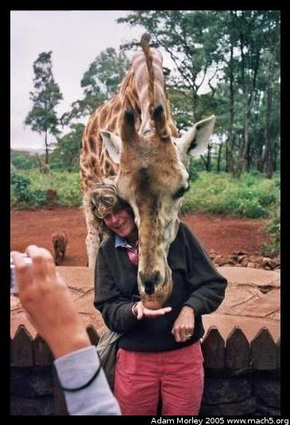
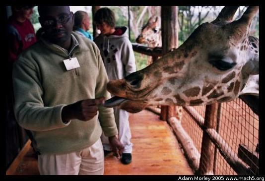
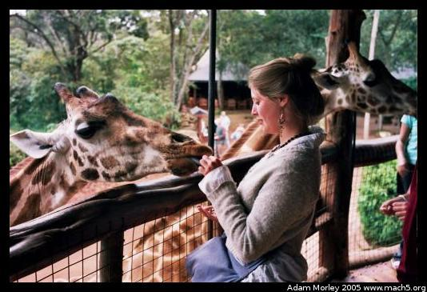
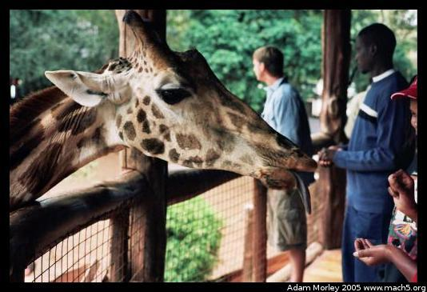
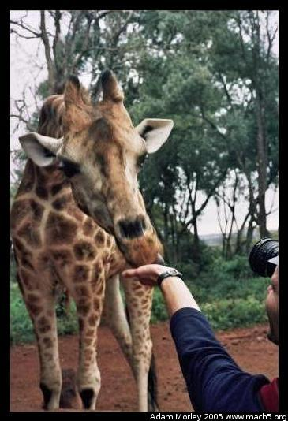

The giraffe center was started to preserve the endangered Rothschild Giraffe, a shorter giraffe variant with "stocking feet." The center was started as an outgrowth of the AFEW (African Fund for Endangered Wildlife). You can actually stay at the Giraffe Manor just next to the park. I wasn't staying at the manor, but the mere idea of feeding giraffes from the breakfast table was enough to make me remember the place!

The caretakers kindly showed us how to feed the giraffes properly. The giraffes would only behave if they were being fed their horse pellets. Stop, and they will go find someone else to play with.

And if you're not careful, the giraffes will swing their head around and bonk you upside the head.

Giraffe tongues are quite long, and quite slimy. The slime is their saliva --- they eat from trees covered in thorns (the Acacia tree, seen in many famous African safari photos), and their saliva acts as a mild antiseptic to assist in healing their tongue.

The trip to the giraffe center involved a number of matatus (public transportation vehicles), a few switches, two times getting lost, and a few conversations with local traffic police.
Adam can be reached at adam dot morley at gmail dot com